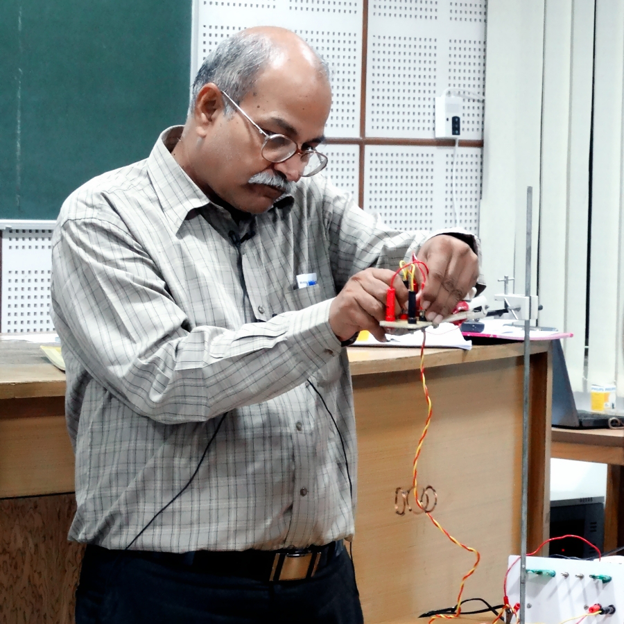
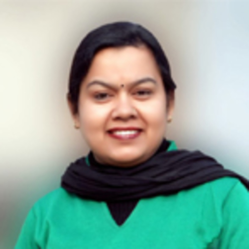
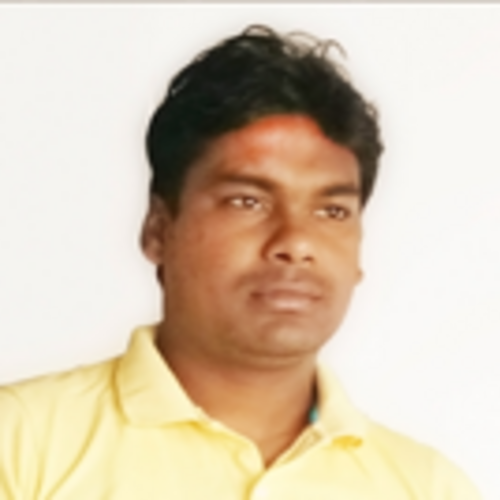
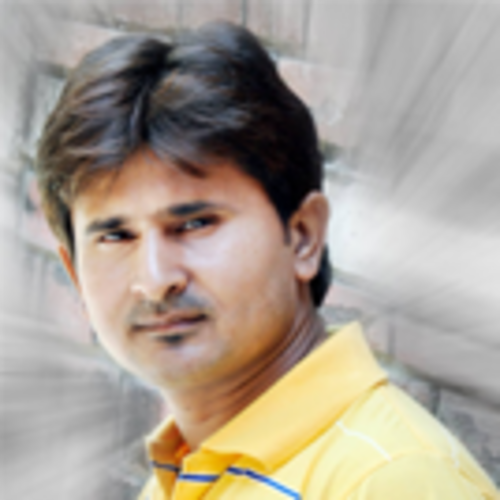
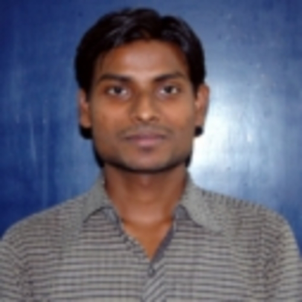

|  | Prof. Harish Chandra Verma (Padma Shri - 2020) was a Professor in the Department of Physics at Indian Institute of Technology, Kanpur. Prior to joining IIT Kanpur, he served Science College, Patna University (1979-1994) as Lecturer and Reader. His research interests are in Nano fabrication using focused ion beam, Magnetism in Graphite on irradiation by ion beam, Nanosize (4 nm-20 nm) magnetic materials, Fe-based alloys, Earth Science etc. He has published 139 research papers in reputed journals. He has also written several books in Physics for School and College level. He has developed more than 300 physics experiments which can be used by teachers as DEMOs in their classrooms. He has also produced a set of 45 video lectures in Hindi at school level. Prof. Verma is Executive Committee member of Indian Association of Physics Teachers (IAPT) which works for physics education in schools and colleges. Prof. Verma had been associated with social causes from the childhood. He has been instrumental is making a group of IIT Kanpur faculty members and students together with local youths to run an NGO called Shiksha Sopan. Through various centers in the villages around IITK Shiksha Sopan is in direct daily contact with about 250 families. Under the leadership of Prof. Verma, at these centers we inculcate Indian values and culture together with giving them educational help. |
|  |
Ms. Anupama Sharma Coordinator (Financial Committee), Shiksha Sopan, IIT Kanpur |
|  |
Mr. Ranjit Kumar Co-coordinator (Science Cell Committee), Shiksha Sopan, IIT Kanpur |
|  |
Mr. Vipin Sharma Media Coordinator, Shiksha Sopan, IIT Kanpur |
|  |
Mr. Atul Kumar Volunteer, Shiksha Sopan, IIT Kanpur |